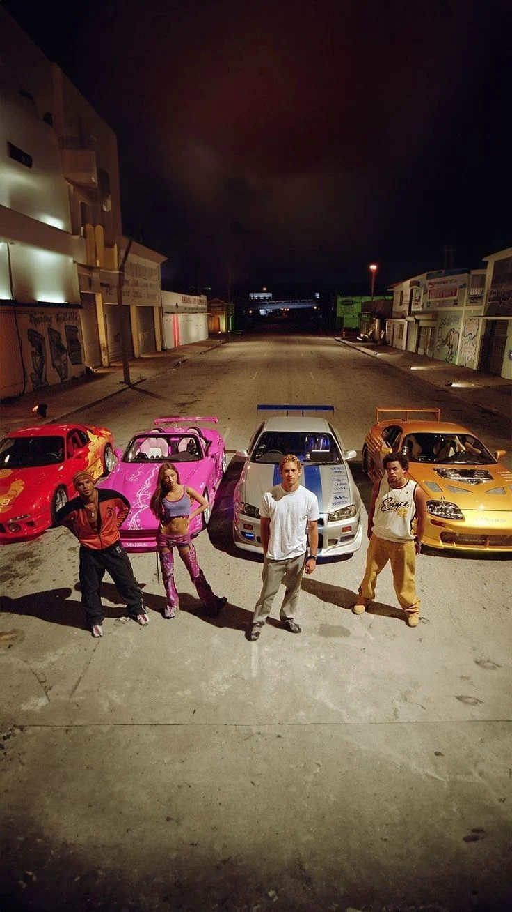
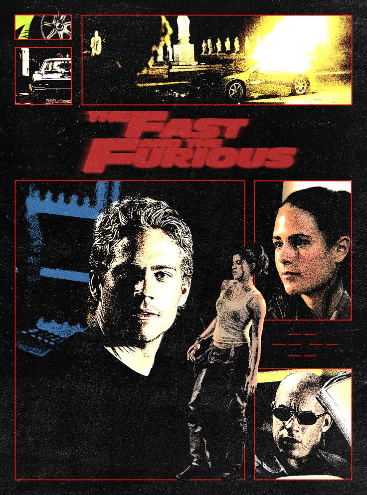

Action, Crime, Thriller
2001
106 minutes
Rob Cohen
Undercover LAPD officer Brian O'Conner infiltrates the world of illegal street racing to investigate a series of high-speed truck hijackings. As he grows closer to Dominic Toretto and his crew, Brian must choose between loyalty to the law and loyalty to the family he's found.